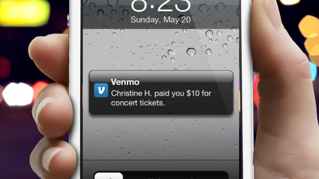
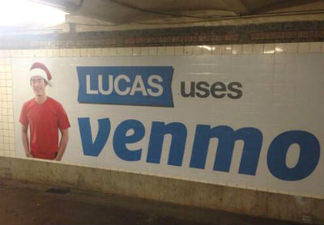

Venmo started as an SMS-based payment platform. Originally founded in 2009 by two college students at the University of Pennsylvania, Venmo took off quickly due to the ease of use. Andrew Kortina and Iqram Magdon-Ismail created Venmo as a Payment Platform with the goal of convenience. Venmo was to eliminate the cash transaction between friends by using a device that everyone carries with them at all times: the cell phone. Through SMS messages, Venmo was used to transfer money between friends back accounts, completely eliminating the need for any cash transaction between friends.
In the first couple of years, the platform was in limited beta. This was to make sure that Venmo could handle the traffic that it was receiving from people who were interested in using the service. The platform was growing in popularity in 2010 largely due to the announcement of ‘close friends.’ The idea of close friends was to allow specific people to charge the user’s bank account without permission of the user. While not the biggest feature of Venmo currently, close friends was the feature that got people talking about Venmo.
Eventually, Venmo developed iPhone and Android applications to circumvent the fee that may be charged for an SMS message. While the SMS option is still available, the iPhone and Android applications focus on the user interface and are much friendlier to the user. Venmo came out of beta in March of 2012. During the time in beta, Venmo took on a much more social aspect, adding user accounts with messages that could be written on each transaction. These messages tend to be used to remind users what the payment was for, but they also can be published for all to see. This makes the message a social interaction between friends.
In August of 2012, Venmo was purchased by Braintree for $26.2 million. Braintree has continued to develop Venmo into its current state, an application known as Venmo Touch. With the ability to use credit cards, Venmo Touch is growing rapidly. Braintree was purchased in September of 2013 by Paypal for $800 million, and it is believed that Venmo was one of the biggest reasons for the purchase. Paypal is currently working with the Venmo team for the next iteration of the service.
To use Venmo, a user has to download the application from their cell phones respective mobile application store. The application is free to all users, and the first thing it has the user do is set up an account. This step is made easier by the Facebook integration located within the app. Once the user account is set up, Venmo finds friends from the phones contacts and Facebook’s friends list. Additionally, Venmo allows the user to send money to any friend who isn’t currently on Venmo through SMS.
Venmo integrates with the user’s bank account by charging the user two small amounts and then refunding them. Once the user goes into their account to verify the transaction amounts, Venmo knows that the user is truly the owner of the bank account and starts to allow transactions through it. Additionally, Credit and Debit cards can be used in place of a bank account. Venmo charges a 3% transaction fee on all credit card transactions and some non-approved debit cards.
Venmo exists because of a need for convenience. While originally developed as a platform for payment between friends, the creators heavily pushed the ability of Venmo to take transaction for businesses that could not accept credit cards. Over time, this capability became less important due to the large consumer base that was using the service for payments between friends. Users are attracted to Venmo because of the convenience, but also because of the social aspect associated with the service. Transactions can be public, and friends of friends can see your transaction messages.
Venmo’s user base is comprised largely of young, early tech adopters. People who use Venmo typically want a convenient solution to splitting up a bill when they’re out with friends. This is less of an issue with older people who typically aren’t as social as the young crowd. While an older market does exist, much of the transaction traffic comes from a younger crowd that goes out with friends on a much more regular basis. Growth has been largely through word-of-mouth, but recently Venmo has been setting up a college ambassador program to draw more young users to the service. There has also been a heavily criticized ad campaign that uses one of Venmo's employees as a model for the company.
As far as a non-consumer market is concerned, Venmo is heavily marketed towards small businesses that don’t accept credit cards. To put it plainly, Venmo is a Transaction Broker. Venmo can be used to pay these businesses without the mess of having to deal with multiple credit card companies. Since Braintree’s purchase of Venmo, this aspect of Venmo has been pushed in conjunction with Braintree’s small business e-commerce solutions. This is how Venmo has become profitable. Braintree charges small businesses to use their services, including Venmo. Small businesses see this as an opportunity because they don’t need to pay the fees of many credit card companies. The process is streamlined through Braintree and made much easier for the merchant.
As far as competition goes, Venmo has Google Wallet to contend with. Seeing as Braintree has been purchased by PayPal, it seems like a logical next step for Venmo to become PayPal’s way to fight Google Wallet. This battle will come down to market share. While many people already have Google accounts, some may want to keep their money separate. PayPal on the other hand already deals with money, and many people have PayPal accounts. If PayPal integrates Venmo with its users accounts, Venmo may become the preferred payment platform over Google Wallet.
There are some journalists claiming that Venmo is already won the payment platform battle. I believe this is due to a great design and an easy to use application. Many journalists have gotten the same impression that I have. Venmo succeeds in taking something as troubling as monetary transactions and paints a calming blue interface over it. The application functions quickly and with ease, keeping the user in the application. Venmo's creators stressed convenience, and the application delivers just that.
With the initial sale of Venmo to Braintree for $26.2 million, the future of the company seems promising. When Braintree was purchased by PayPal for a much larger sum of money, Venmo was almost secured a spotlight in the payment platform war. Many journalists have written about the pros and cons of the platform, and how Venmo compares to other companies like Square and Google Wallet. Unfortunately, it is far too early to tell exactly what will become of Venmo, but with the force of PayPal behind its operations, it will be a very interesting future for the company.
Venmo's founders have even gone as far as to say that by 2017 Credit Cards will become a thing of the past. While certainly a very bold claim in terms of the timeline, it wouldn't surprise me if credit cards are eventually phased out for something similar to Venmo.